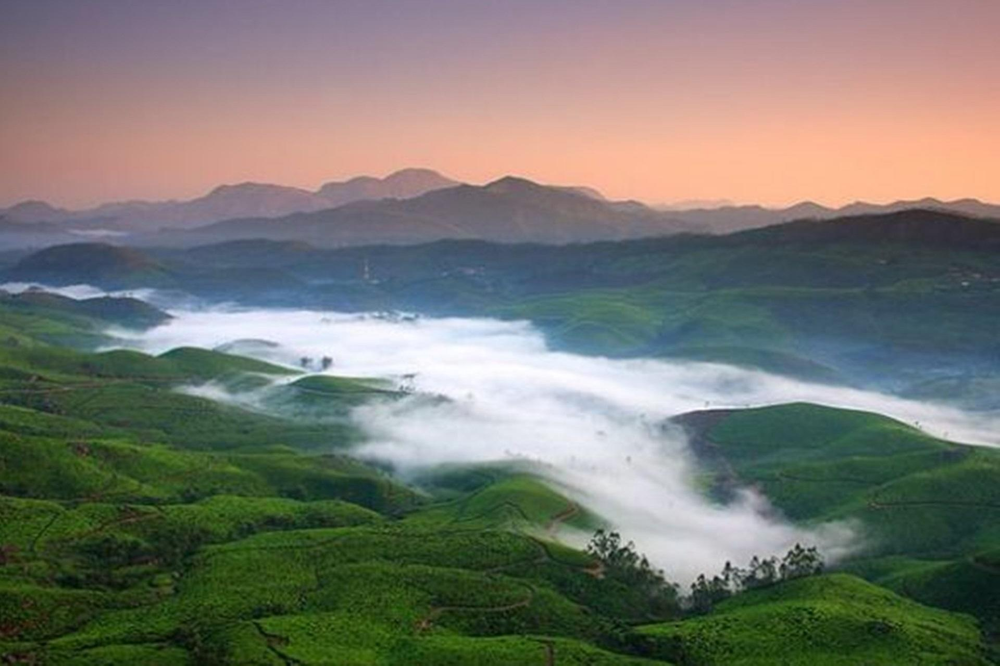
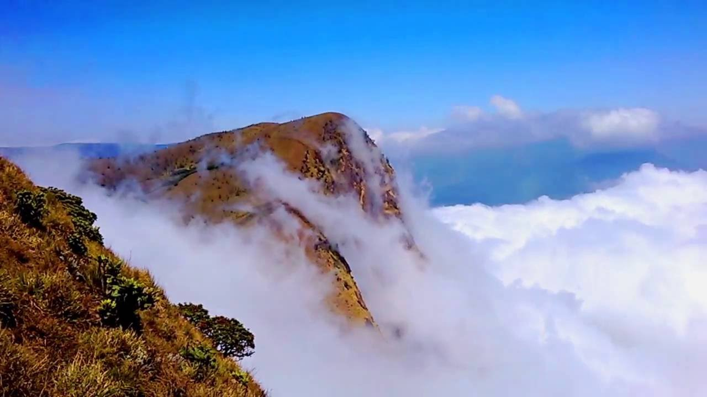
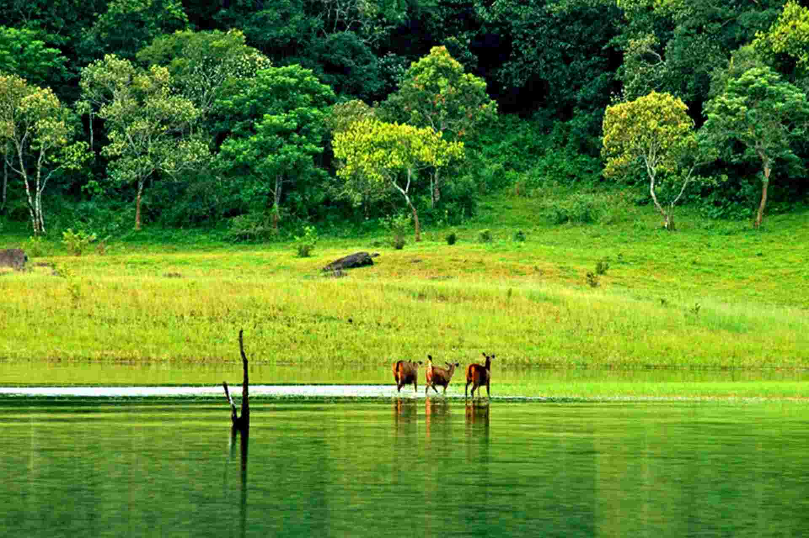

Idukki Dam
The Idukki Dam, located in Kerala, India, is a 168.91 m (554 ft) tall arch dam. The dam stands between the two mountains – Kuravanmala (839)m and Kurathimala (925)m. It was constructed and is owned by the Kerala State Electricity Board. It supports a 780 MW hydroelectric power station.This dam was constructed along with two other dams at Cheruthoni and Kulamavu. Together, the three dams have created an artificial lake that is 60 km² in area.

Munnar
Munnar - breathtakingly beautiful - a haven of peace and tranquility - the idyllic tourist destination in God's own country. Set at an altitude of 6000 ft in Idukki district, Munnar was the favored summer resort of the erstwhile British rulers in the colonial days. Unending expanse of tea plantations pristine valleys and mountains exotic species of flora and fauna in its wild sanctuaries and forests aroma of spice scented cool air yes! This beautiful destination has all these and more. It's the place you would love to visit.It's the place you would wish never to leave.

Meeshpulimala
Meesapulimala is the second highest peak of India outside the Himalayan ranges after Anamudi Peak. It situates 2,640 meters above sea level. Meesapulimala means ‘Whiskers of Tiger Mountain’. The naming is due to its location among eight hills which spreads looking like a head of a tiger with its whiskers. The hiking trail to Meesapulimala is one of the most difficult and scenic track in Kerala State, automatically making it a much sort after destination for many.

Thekkady
Home to the country's largest Tiger Reserve- Periyar, Thekkady is an important tourist destination in Kerala. There are many resorts near the national park and an early boat safari within the sanctuary is amust to be able to spot wild elephants, bisons, wild boars, various kinds of birds, etc. Periyar National Park, being a major attraction, is one place where you can enjoy bamboo rafting in the catchment area of Mullaiperiyar Dam. Travellers can also experience night trek in the wilderness of Periyar.